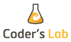
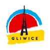

Witomy piyknie cołki Ślönsk!
Rails Girls nareszcie u nos. Przez dwa dni bydymy wynokwiać i laubrować w świecie Ruby on Rails.
Rejestracja zakończona.
Dej pozór i pacz na nos na Twitterze i Facebooku.
Łobocz tyż inksze Gorolowice
Nasi trynerzy pomogom Ci stworzyć aplikacje w necie.
Czego potrzebujesz? Styknie Ci komputer, Twoja gowa i trocha wyobraźni!
Chcesz pomóc? Szukomy wolontariuszy i Rails-trynerów. Naskrobej do nos.
| 16:30 - 17:00 | Rejestracja |
|---|---|
| 17:00 - 18:00 |
Łonaczynie i instalacja środowiskaBydymy instalować Ruby on Rails na Twoim komputerze, więc prosza Cie, weź swój laptop. |
| 18:00 - 19:00 |
Drabko godomyDorota Sokołowska - "Dlaczego Geek Girls kochaja marchewki - czyli parę słów o GGC"Adam Sibik - "Programowanie to prawie jak supermoce. CoderDojo na świecie, w Polsce, w Gliwicach" Marlena Staszek - "Women in Technology" |
| 19:00 - 20:00 | Werksztele |
| 20:00 - 24:00 |
Friday Hug i wieczorek integracyjny;] |
| 09:00 - 10:00 | Śniodoniy - wyżyrka |
|---|---|
| 10:00 - 13:00 | Werksztele |
| 13:00 - 13:45 | Łobiod |
| 13:45 - 14:00 |
Bentobox - Pomysły wyłonaczone z netuMichał Skóra |
| 14:00 - 15:00 |
Drabko godomyBasia Madej - "Adventures? Make You Late for Dinner"Michał Wyrobek - "Communication oriented programming" Zofia Lekki - "Niech MOOC będzie z Tobą!" Alek Małaszkiewicz - "Efektywność w zespołach" |
| 15:00 - 18:00 |
WerkszteleRozwijanie aplikacji |
| 18:00 | Pieronym gibko gadka końcowa |
Wiela to kosztuje? Nic nie płacisz, cołki udział na faty! Ciesz się chwilą!
Dla kogo te werksztele? Kerowane som do babów, starych i modych, musi ino znoć trocha komputer. Większość bydzie po polsku chociaż mogom sie trefić po angielsku godający ludzie. Wyźta ze sobom komputery.
Czy chopy tyż mogom? Ja, ale frele zawsze bydom mieć pierwszeństwo.
Godosz, że wszystko już umisz? Szukomy wolontariuszy jako trynerów. Za wczasu bydzie spotkanie organizacyjne. Ćwiyrknij do nos
Hackerspace Silesia jest to społeczność kreatywnych ludzi z różnych obszarów zainteresowań związanych z technologiami.
 Women in Technology Women in Technology to społeczność kobiet, które łączy jedna wspólna cecha - technologia.
Women in Technology Women in Technology to społeczność kobiet, które łączy jedna wspólna cecha - technologia.
 Mikstura IT jest fundacją, która skupia społeczność internetową i mobilną. Ma na celu dostarczenie forum dla programistów, grafików, przedsiębiorców, organizacji pozarządowych i wszystkich zainteresowanych.
Mikstura IT jest fundacją, która skupia społeczność internetową i mobilną. Ma na celu dostarczenie forum dla programistów, grafików, przedsiębiorców, organizacji pozarządowych i wszystkich zainteresowanych.
 Woman on Rails to blog o technologiach (np. Ruby, Rails, JavaScript, CoffeeScript), emocjach i wydarzeniach z branży IT.
Woman on Rails to blog o technologiach (np. Ruby, Rails, JavaScript, CoffeeScript), emocjach i wydarzeniach z branży IT.
 Soroptimist International Klub w Cieszynie to ogólnoświatowa organizacja dla kobiet o wysokiej pozycji zawodowej i społecznej. Ich misją jest podejmowanie działań dla poprawy życia kobiet i dziewcząt.
Soroptimist International Klub w Cieszynie to ogólnoświatowa organizacja dla kobiet o wysokiej pozycji zawodowej i społecznej. Ich misją jest podejmowanie działań dla poprawy życia kobiet i dziewcząt.
 SRUG (Śląska Grupa Użytkowników Ruby) to przyjacielskie i cykliczne spotkania dot. języka Ruby i nie tylko. Celem jest wymiana wiedzy i doświadczeń programistów.
SRUG (Śląska Grupa Użytkowników Ruby) to przyjacielskie i cykliczne spotkania dot. języka Ruby i nie tylko. Celem jest wymiana wiedzy i doświadczeń programistów.
Geek Girls Carrots (GGC) to społeczności kobiet kochających nowe technologie. Misją społeczności jest promowanie kobiet w IT.
 Weź udział w krakowskiej edycji hackathonu #hack4good 0.6 12-14 września 2014.
Weź udział w krakowskiej edycji hackathonu #hack4good 0.6 12-14 września 2014.
Konferencja SmartDevCon jest wydarzeniem skierowanym do osób związanych z rozwiązaniami mobilnymi i wbudowanymi.
 Coder's Lab to pierwsza w Polsce Szkoła Programowania, oparta na nowoczesnych kursach typu bootcamp. Flagowy kurs Ruby on Rails skierowany jest do osób, które chcą dołączyć do grona specjalistów poszukiwanych w branży IT.
Recruit Coders to platforma internetowa, która stanowi pomost pomiędzy programistami i firmami z całego świata.
 Patronat Prezydenta Miasta Gliwice.
Otwarcie rejestracji: Sierpień 24, 2014
Zakończenie rejestracji: Wrzesień 14, 2014
Informacja o przyjęciu na warsztaty: Wrzesień 20, 2014
Kaj to bydzie? We Gliwicach. Pszczyńskiej 85.
Rails Girls Silesia jest współorganizowane dzięki naszym wspaniałym partnerom i sponsorom.
Chcesz pomóc? Szukamy partnerów i sponsorów, którzy wesprą to wydarzenie non-profit! Napisz do nas!
Aby wydobyć piękno kamieni szlachetnych należy zastosować odpowiedni szlif.

Fractal Soft
to zgrany zespół, z pasją. Kochają proste rozwiązania i dobre praktyki programistyczne. Używają Ruby on Rails aby spełniać marzenia o aplikacjach internetowych. Można ich spotkać na różnych wydarzeniach IT.
The Software House to zespół świetnych developerów pracujących nad wspaniałymi projektami dla miłych, międzynarodowych klientów. Pracują z najlepszymi dostępnymi narzędziami w przyjemnym biurze w centrum Gliwic (i zdalnie!).
Github to najlepsze miejsce do dzielenia się kodem z przyjaciółmi, współpracownikami, kolegami, oraz obcymi osobami. Ponad 6 milionów osób używa Githuba do budowania niesamowitych rzeczy.
Selleo projektuje i wdraża aplikacje webowe i mobilne dla firm oraz organizacji pozarządowych. Ruby on Rails zawsze był główną technologią webową, w której zespół tworzył projekty.
Trix.pl jest zespołem doświadczonych inżynierów pracujących zdalnie ze startupami na różnych poziomach używając Railsów przez ponad 10 lat.
Cowbell Labs to niewielki zespół zapaleńców, zajmujących się tworzeniem aplikacji internetowych i mobilnych, wykorzystujących do tego celu najnowsze i najlepsze narzędzia - m.in. Ruby on Rails.
MegiTeam to hosting nowych technologii w chmurze. Gotowe środowiska programistyczne oferujące szybkie wdrażanie serwisów webowych i uruchomienie aplikacji jednym kliknięciem.
Salon fryzjerski Unikat Studio w Katowicach świadczy profesjonalne usługi fryzjerskie oparte na produktach firmy Goldwell.
Idea stojąca za Rails Girls pokrywa się z poglądami Monterail. Tak jak organizatorzy wierzymy, że niesłabnąca chęć do nauki wyróżnia ludzi mogących zmieniać świat swój i innych. Promowanie takiego podejścia idealnie zawsze znajdzie miejsce w naszym kodeksie zawodowym. I dlatego znalazły tam miejsce również Rails Girls.
 Netguru to zgrany zespół web developerów, specjalizujący się w projektowaniu, wdrażaniu i utrzymywaniu systemów i aplikacji internetowych, wykorzystując technologie Ruby on Rails. Działamy w oparciu o sprawdzone metodologie Agile i Lean Startup.
Netguru to zgrany zespół web developerów, specjalizujący się w projektowaniu, wdrażaniu i utrzymywaniu systemów i aplikacji internetowych, wykorzystując technologie Ruby on Rails. Działamy w oparciu o sprawdzone metodologie Agile i Lean Startup.
Odłóż książki z programowania i ucz się z Code School. Code School oferuje różnorodne kursy JavaScrip, HTML/CSS, Ruby i iOS, które pomogą Ci rozwinąć swoje umiejętności i nauczą nowych technologii.
 Utworzona w roku 2009, Wooga stała się jednym z najbardziej popularnych producentów gier mobilnych na świecie.
Utworzona w roku 2009, Wooga stała się jednym z najbardziej popularnych producentów gier mobilnych na świecie.
Helion to wydawnictwo specjalistyczne publikujące książki związane z technologiami, kierowane do wszystkich użytkowników komputerów, bez względu na stopień zaawansowania.
Good Cake to angielska piekarnia w Gliwicach. Bella stworzyła Good Cake czerpiąc inspiracje z angielskiej tradycji wypieków. Good Cake to po prostu dobre ciasto.
Złoty Osioł to bar wegetariański w samym centrum Katowic i Gliwic. Gotujemy dania wege z kuchni całego świata.
Software i design house z Gliwic (HQ), Wrocławia i Krakowa, zajmuje się kompleksowym rozwojem projektów.
TVP Katowice jest naszym patronem medialnym.
Webmastah to miejsce wymiany poglądów i doświadczeń niezależnie od języka programowania, przekonań czy ilości godzin przesiedzianych nad kodem.

 Agnieszka Matysek,
Agnieszka Matysek, Aleksander Małaszkiewicz,
Aleksander Małaszkiewicz, Ula Hołodniak,
Ula Hołodniak, Danuta Piwowar,
Danuta Piwowar, Grzegorz Lisowski,
Grzegorz Lisowski, Andrzej Grzbiela,
Andrzej Grzbiela, Michał Skóra,
Michał Skóra, Patryk Fitzner,
Patryk Fitzner, Wojciech Wnętrzak,
Wojciech Wnętrzak, Natalia Stanko,
Natalia Stanko, Magdalena Malinowska,
Magdalena Malinowska, Kasia Jarmołkowicz,
Kasia Jarmołkowicz, Zofia Lekki,
Zofia Lekki, Katarzyna Szawan,
Katarzyna Szawan, Sylwia Robak,
Sylwia Robak, Michał Wyrobek,
Michał Wyrobek,